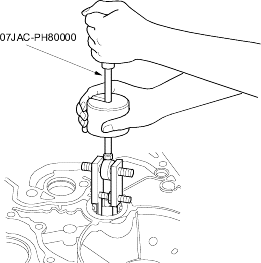
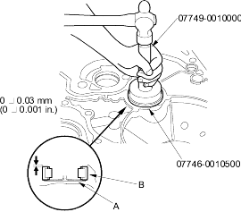

- Adjustable bearing remover set, 07JAC-PH80000
- Handle driver, 07749-0010000
- Driver attachment, 62 x 68 mm, 07746-0010500
- Remove the countershaft bearing with the special tool.

- Install the ATF guide plate (A).

- Install the new countershaft bearing (B) in the housing with the special tools.